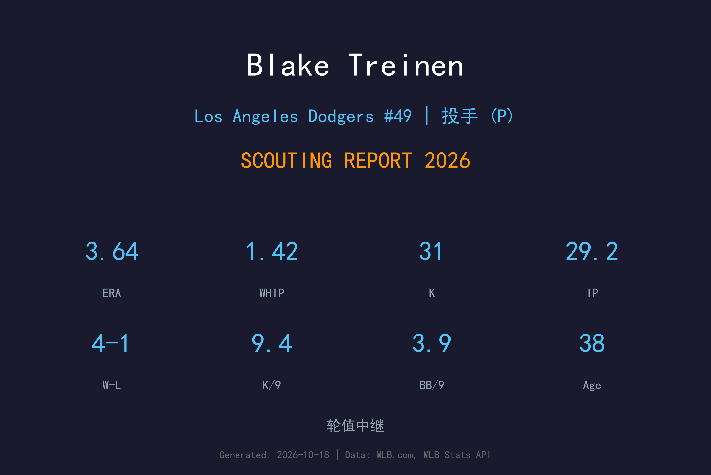
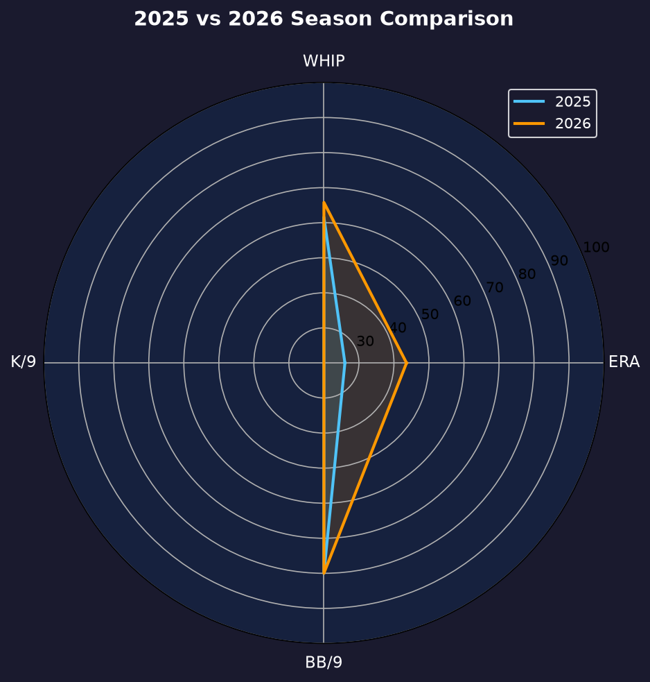
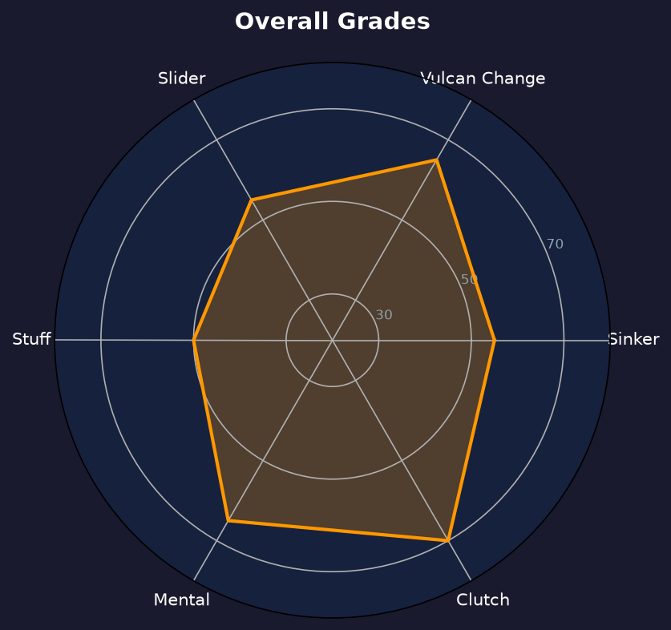

Los Angeles Dodgers #49 | 后援投手 | 右投 / 右打 | 侧投传奇

Blake Treinen 是现役最年长的后援之一，以低角度侧投与 Vulcan change（火山变速球）闻名的大场面专家。2025 年的伤病与挣扎（32 场 5.40 ERA）几乎让所有人以为他的生涯告终，但 2026 年他用 36 场 3.64 ERA 的反弹告诉世人：传奇还没写完。
2026 年他 4-1、1.42 WHIP、6 hold、inherited runners 14 中仅 5 得分，每一样都比 2025 年显著改善。他的伸卡球均速已不复 2018 年（0.78 ERA 救援王）的巅峰，但下沉位移与配球智慧仍在。
38岁的 Treinen 已经把每一天都当作职业生涯的馈赠。2027 年他若选择继续，将是纯粹出于对棒球的热爱——而道奇会很乐意把牛棚的最后一个位置留给这位侧投传奇。
68 场 0.78 ERA、38 次救援成功、100 次三振，入选全明星并获美联救援王，其伸卡球均速达生涯最高。
2020 年加盟首年即夺冠；2024 年恢复健康后 50 场 2.93 ERA，随队再夺世界大赛冠军。
从 5.40 ERA 反弹至 3.64，WHIP 从 1.84 降至 1.42，证明高龄仍可高效。

| 赛季 | G | W-L | ERA | IP | SO | BB | WHIP | Hold |
|---|---|---|---|---|---|---|---|---|
| 2025 | 32 | 2-7 | 5.40 | 26.2 | 36 | 19 | 1.84 | 10 |
| 2026 | 36 | 4-1 | 3.64 | 29.2 | 31 | 13 | 1.42 | 6 |
全面反弹：ERA 降 1.76、WHIP 降 0.42、战绩从 2-7 到 4-1——38 岁的反弹比 28 岁的更动人。
球速：94-96 mph
评分：A-
他的生涯招牌。极低的出手角度加上爆炸下沉，打者很难把球拉起来，制造大量滚地球 weak contact。
球速：86-89 mph
评分：A
MLB 最独特的变速球之一。以 Vulcan grip（食指中指分岔）投出，下坠轨迹与一般 circle change 完全不同，是他三振左右打者的秘密武器。
球速：88-91 mph
评分：B+
对付右打者的配球，位移中等但出手隐蔽。
2025 年的 5.40 ERA 部分源于肩伤恢复期的机械失调；2026 年他通过降低使用率（控制在隔日出赛）与简化配球（伸卡+Vulcan 为主）找回了效率。1.42 WHIP 虽然仍高于巅峰，但对 38 岁老将已是优秀的回归。
Treinen 的价值在常规赛数据之外——两次世界大赛冠军的经验让他在季后赛 roster 中始终占有一席之地。道奇教练团在关键局面对他信任有加，这份信任来自十余年季后赛的积累。
这是一个"老兵不死"的赛季。从被质疑该退役，到 36 场可靠出赛，Treinen 用行动书写了自己职业生涯的又一篇章。他的存在本身，就是道奇牛棚年轻球员的活教材。

38 岁仍在书写的侧投传奇
B 级 / 老将领袖
Blake Treinen 的2027赛季取决于一个简单的问题：他的身体还愿意继续吗？如果答案是肯定的，道奇会很乐意继续为他保留牛棚位置——无论是作为投手还是未来的教练储备。
2026：36 场 3.64 ERA，从谷底反弹
2027：目标健康出赛、转型导师角色，或选择退役
未来：无论是否继续投球，他的 Vulcan change 都已被写进 MLB 投球教科书
Blake Treinen 出生于堪萨斯州 Osage City，高中时期同时参与棒球与美式足球。大学就读于阿肯色大学 Fort Smith 分校与南阿肯色大学，2011 年 MLB 选秀第 7 轮被奥克兰运动家选中。因肩部手术错过了 2011 年大部分赛事，后被交易至华盛顿国民队。
2014 年 4 月 12 日他完成大联盟首秀，初期作为先发投手起步，因控球不稳转战牛棚。2018 年迎来生涯年：68 场出赛、0.78 ERA、38 次救援成功、100 次三振，入选全明星并获美联救援王。2020 年他加盟道奇，当年即随队夺得世界大赛冠军，2024 年再获第二枚戒指。
Treinen 以沉默寡言、场上冷静著称，他的低角度侧投被球迷形容为"从地面冒出来的球"。2023 年他曾因肩伤只出赛 13 场，2025 年又经历伤病与挣扎，但每次他都用反弹回应质疑。场外的他是年轻球员尊敬的导师，他的 Vulcan change grip 已成为后辈争相学习的对象。